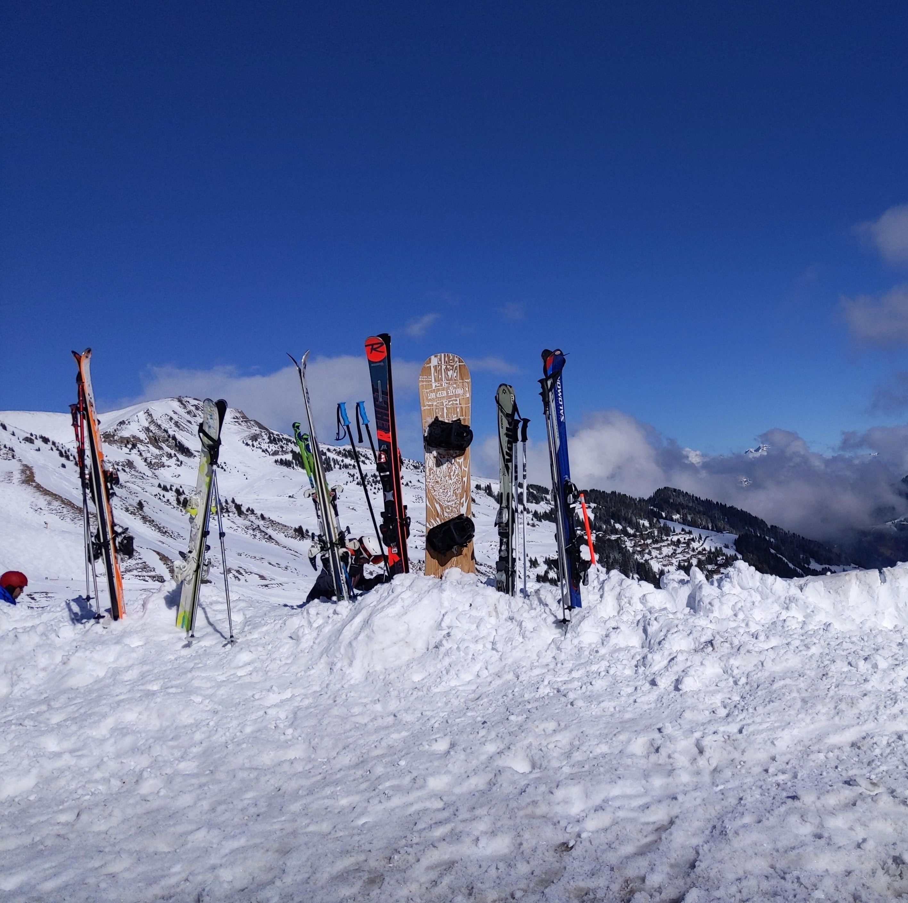

Julian Marmier
julianm.tkAbout me
I'm Julian Marmier, a senior at Lexington High School, in Lexington, MA. Ever since I was four, I’ve always been passionate about two things—computers and design. Today I like to blend both of those together as much as I can, and am part of a FIRST Tech Challenge robotics team, the Lexington Legoheads, where I lead work on the Engineering Notebook. I'm not that much of an athlete, but I did enjoy swimming on the LHS Boys Varsity Swim Team!
Contact me – julianmarmier@gmail.com
Artist Statement
As an artist, my work aims to bring out the beauty in simple things. There is such a big world to show and so little space to show it, so instead of trying to add more, I add less. There is a certain appeal to simplicity, because it can look like little at the surface, but a closer look tells you that there is meaning behind the work. In simplicity, one often finds hidden complexity.
I work on the basis of do first, think later. Ideas flow in and I blindly follow them, as if by instinct. If I’m not satisfied, then I improve my drawing until I am. If the idea really doesn’t work out, I set it aside and start over. Sometimes a design that I previously disliked can suddenly become my favorite.
The majority of my current “artistic” work is photographic, but other things that I have made could also be considered art. The websites, videos, and posters that I have created in the past all conform to the principle of simplicity, and present to the viewer easy-to-digest content with an aftertaste of depth.
Rule of Thirds
Leading Lines
Point of View


Color Relationships